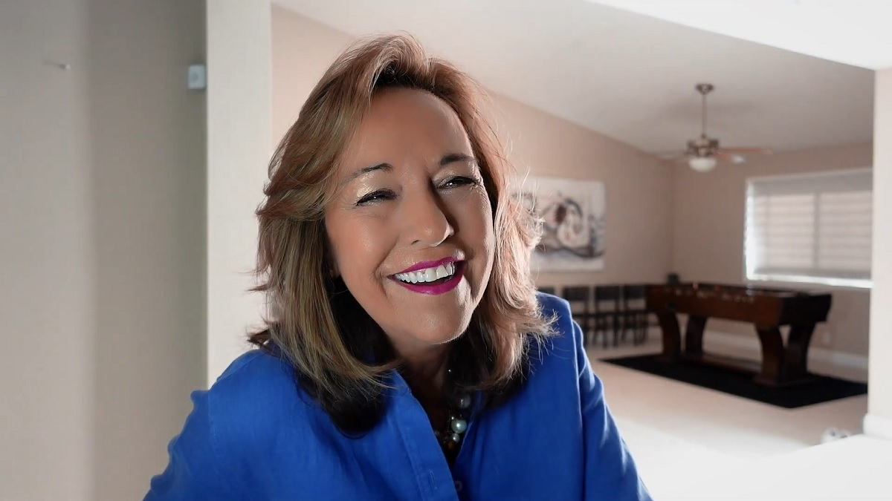
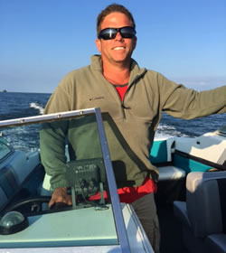

Canrisk

Welcome to Canrisk. We are a platform dedicated to providing prevention tools, emotional support, and assistance for young people and families facing cancer.
Learn About Cancer Types →To support someone with cancer, the key is authentic presence and avoiding forced positivity that invalidates their fears. Listen actively and without judgment, allowing the person to safely express their sadness or anger. Instead of asking "How can I help?", offer concrete actions such as bringing food, cleaning, or running specific errands.

Always respect her autonomy, treating her as the person she is rather than just a patient undergoing treatment. Avoid offering unsolicited medical advice or sharing stories about other cases that create unnecessary pressure. Supportive silence is often more comforting than clichés or motivational speeches.
In this section, you will find various testimonies from warriors who overcame cancer.
Never lose hope.

In case I need to fight again, I’ve got my gloves tucked away and ready.
I’m Ana María, a stage 4 lung cancer survivor, and I’ve been cancer-free for six months.
My son-in-law is an oncologist; having a doctor for a son-in-law who understood the subject was a positive thing at times, but at other times, it wasn't.
Anything negative does me no good. And since everything was negative, at one point I had to sit down with him and explain that I don't respond well to negative things—like his percentages and statistics. They don't help me because I don't operate that way. Once I explained that it was hurting me and wasn't helpful—and luckily he was able to understand, though it took some effort—things changed.
Staying positive and surrounding yourself with the right people and things is a huge help. If you can face the disease, you can also stand up to one or several negative people.

About four years ago, Juan Luis Tintaya began experiencing discomfort in his tongue. Sores appeared, and he felt a burning sensation. He hoped the symptoms would go away on their own, but they didn't, so after two months, he visited a doctor. A head and neck specialist ordered a biopsy to rule out the possibility of a malignant tumor.
The results confirmed cancer of the tongue, the floor of the mouth, and the lymph nodes. At the time, Juan Luis was 41 years old and working hard. However, the diagnosis brought his professional life to a halt so he could focus on his health. He underwent surgery, followed by chemotherapy and radiation.
His cancer treatment lasted three months—a short but intense period. Surgeons successfully removed the affected area and the lymph nodes. He underwent 33 radiation sessions and received three high-dose chemotherapy treatments. He recovered well after that.

Felix Salomon was diagnosed with prostate cancer in 2009, at the age of 61. Unfortunately, he experienced medical malpractice; subsequently, he went to a different hospital where he underwent the necessary tests and another surgery.
After that surgery, Mr. Salomon continued his medical check-ups, and thanks to this good habit, a recurrence of the cancer was detected early in 2012. He underwent 36 sessions of radiotherapy and currently has a check-up once a year.

Nine years ago, Felipe Yanes discovered he had prostate cancer, thanks to the routine medical check-ups he made a habit of getting. His great sense of humor and positive outlook on life worked in his favor throughout his treatment.
Here is his testimonial as a cancer patient: “When I had the biopsy, true to form, I told the doctors: ‘If it’s a bingo, we’d better note the number, because it’s bound to be a winner.’ They laughed. And sure enough, it was cancer. I didn’t get depressed; I trusted the doctors and underwent the surgery they recommended.”
Yanes did not need chemotherapy or radiation therapy; in his case, the surgery was sufficient. Since then, he has diligently kept up with his periodic check-ups and advises everyone to do the same, as this allows cancer to be detected in its early stages.

Before my cancer diagnosis, I was always in excellent health. I didn't have any serious issues, and my menstrual cycle was normal.
Then, in November 2011, I experienced significant vaginal bleeding for about a week, followed by a complete absence of my period the next month—which wasn't normal for me.
Over time and through treatment, I’ve learned to treat myself better. I listen to my body. When I’m tired, I rest. When I’m sad, I cry. When I’m happy, I laugh. I’m still getting to know my "new" body. Sometimes it works well, other times it doesn’t. But I’m alive and I’m doing well, and I’m surrounded by the people I love most!

It was around Christmas when I went in for one of my routine screening tests. I didn't think much of it because it was just a routine medical appointment, like so many others before it. But I will never forget the call I received from the doctor afterward: the Pap smear had come back abnormal, and there were precancerous cells in the sample they had taken.
I decided to undergo a procedure to remove the cells. I remember resting at home during my recovery and feeling so grateful for that appointment. Had I not gone, the future might have looked very different for me.
People hear the word "cancer" and wonder, "Will I survive? Will I have to live with this forever?" But I know that doesn't always have to be the case. We can catch these issues early, prevent cancer before it starts, and then recover and reach our full potential in life.

In September 2015, I was completing my studies at Squadron Officer School when I noticed a lump on my vulva one day after getting out of the shower. At first, I didn't pay much attention to it because I thought it might have been caused by training.
Since the mass was about 6 cm in size, we decided to perform an outpatient procedure and send the tissue to pathology. I had the surgery on February 2, 2016, and two weeks later, I went for a follow-up appointment to ensure I was healing properly; it turned out the margins tested positive for vulvar sarcoma, and I was referred to a specialist.
When I share my story, my message to other women is that you know your body better than anyone else. If there is any change you don't understand, get a check-up. I firmly believe that early diagnosis saved my life.

In March 2013, I started experiencing some abdominal bloating and unexplained weight gain. I visited a couple of doctors. They performed an X-ray and an EGD.
I sought out a gastroenterologist who immediately palpated my stomach and ordered a CT scan. He called me back to his office and told me, "You have ovarian cancer." I was stunned and became hysterical. I am blessed to have an aunt who is an oncology nurse. She called an oncologist who put me in the hands of one of the best gynecologic oncologists in the country. He performed a radical hysterectomy and, following his recommendation, I underwent six rounds of chemotherapy.
I finished treatment in November 2013.
In August 2007, I started experiencing heavy bleeding and went to a nearby health center. Doctors found something suspicious in my uterus. They referred me to a gynecologist for a biopsy, which revealed that I had cancer. I was then referred to a gynecologic oncologist; after performing an additional biopsy on my cervix, he discovered cancer cells there as well. To this day, doctors do not know for certain whether the uterine cancer developed before the cervical cancer or vice versa.
I underwent radiation therapy and chemotherapy. Fortunately, I did not experience any side effects from the treatment. After the radiation and chemotherapy, I had a complete hysterectomy and my ovaries were removed. I am now cancer-free.
Nowadays, cancer is no longer a death sentence. Do not assume you don't have cancer simply because you think you cannot afford the consultation for the diagnosis and treatment you need.

In 2016, I noticed I was getting more tired; I thought it was due to traveling. I decided to see a doctor for a check-up. I spoke to him about getting a colonoscopy, even though I hadn't experienced any symptoms other than fatigue. I wanted to get screened because it had been seven years since my last colonoscopy. Also, my father had colon cancer when he was only 45 and survived. Today, my father is 75 years old and in relatively good health.
I had the colonoscopy on January 10, 2017, and the doctor took tissue samples for a biopsy. A week later, the results came back confirming I had colon cancer. On February 2, 2017, I underwent surgery to remove the cancer.
Fortunately, because the cancer was detected early enough, the surgery was successful. But they never would have found it early if I hadn't gotten screened.